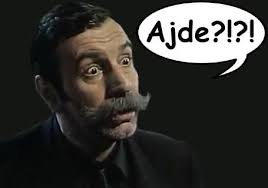

Ovo je head 1
Ovo je div element koji more sadržavati block-level i inline elemente kao npr span span element
oznaava break u novi read © je znak a ovo: označava da se na tom mjestu razmak nikaada neće prelomiti u novi red,
a
je horizontal rule gdje se vodoravno sječe stranica
paragraf, gdje je < umjesto znaka manje
span

Link #section01 dovodi do ovoga teksta, ove rečenice